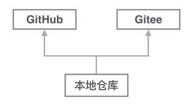

0.本地库同步到多个远程库
比如我现在想要把我的代码再push一份到码云该怎么做呢？
首先想到最简单的git remote add origin SSHkey
但是事实上会报错！
fatal: remote origin already exists.
上次我已经遇到过这个错误了，这说明本地库已经关联了一个名叫origin的远程库， 此时
用git remote -v查看远程库信息：
$ git remote -v
origin git@github.com:yuanjiaCN/yuanjiaCN.github.io.git (fetch)
origin git@github.com:yuanjiaCN/yuanjiaCN.github.io.git (push)
果然本地库已经关联了名字叫origin的远程库，并且该远程库指向GitHub
于是我决定删除已有的GitHub远程库
git remote rm origin
然后我给GitHub的远程库起名字叫github,给码云的远程库起名字叫gitee不就好了嘛！说做就做！
git remote add github “GitHub的SSHkey” git remote add gitee “码云的SSHkey”
现在再使用git remote -v就可以看到4条信息啦（两条github，两条码云）
如果要推送到GitHub，使用命令：
git push github master
如果要推送到码云，使用命令：
git push gitee master
这样一来，我们的本地库就可以同时与多个远程库互相同步：
